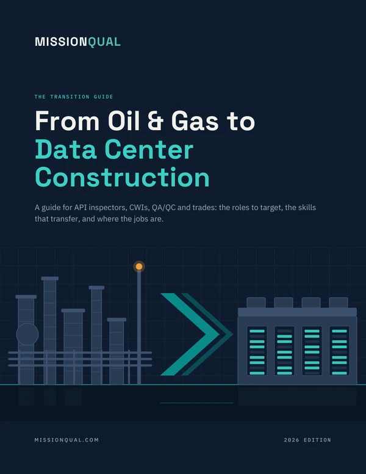

The Transition Guide
Download it now. A copy is also on its way to your inbox, so you can come back to it later.
Download the guideShort on time? Start with page 3, the short version.

The MissionQual community
The guide shows you the way. The community walks it with you: a private group of oil and gas professionals who have made the move to data center construction, or are making it now.
Join the communityWhich contractors are good to work for, what a site is really like, and what people with your background are actually paid.
Real QA/QC, inspection, commissioning and trade openings, each with a note on why an oil and gas background fits. Posted here first.
When a member's site or contractor is hiring, you hear about it first and get put in front of the right person.
Q&As with recruiters who staff data center jobs, and "how I got hired" walk-throughs from members who just made the move.